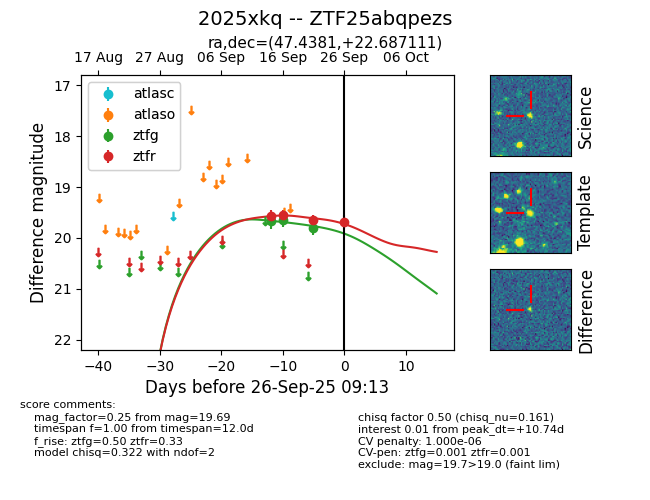
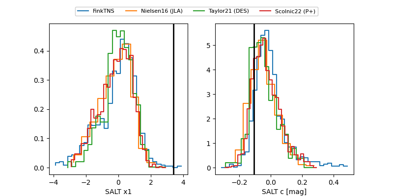

FINK: ZTF25abqpezs
Lasair: ZTF25abqpezs
ALeRCE: ZTF25abqpezs
TNS: 2025xkq
YSE: 2025xkq
ZTF25abqpezs (ztf,fink)
2025xkq (tns,yse)
equatorial (ra, dec) = (47.4381,+22.68711)
galactic (l, b) = (160.1398,-30.01321)


last ztfg=19.80, ztfr=19.69
3 ztfg, 4 ztfr detections